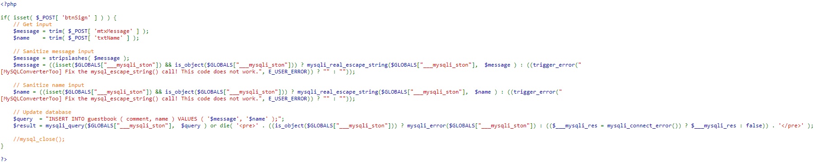

The stored comment isn't validated for any malicious scripts. This allows the user to store any malicious
scripts in the database.

You can filter out words like `script` , use htmlspecialchars() which escapes HTML controlling
characters, or use an Anti-CSRF token.